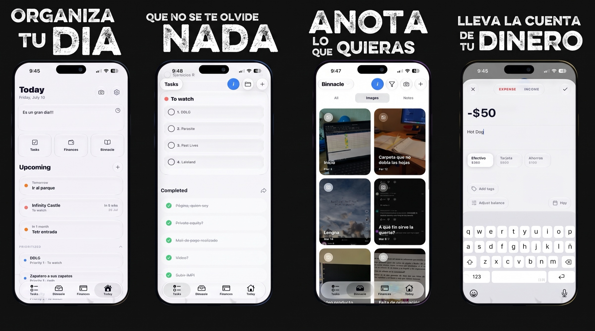
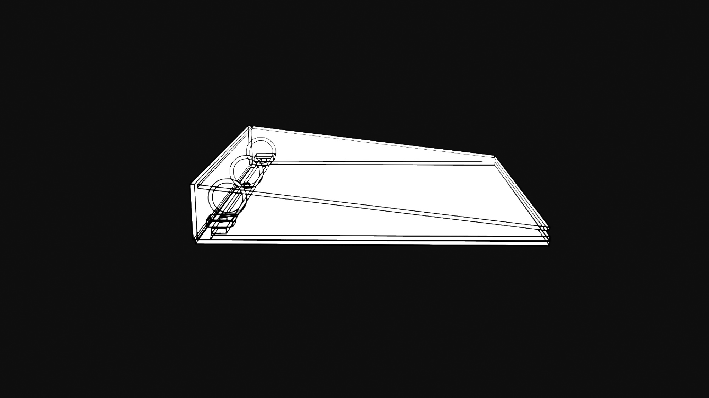

Construyo productos, comparto ideas y aprendo creando.
Estos son mis proyectos más relevantes.

Un sistema personal de claridad para iOS: tareas, diario y finanzas en una sola app minimalista. Sin suscripciones, sin nube, sin distracciones — tus datos viven solo en tu teléfono.

La primera carpeta para usar como cuaderno.
Tu correo, resumido cada mañana: un brief diario con lo importante de tu inbox, sin tener que abrirlo todo.
Desde los 13 años comencé en el desarrollo de software. He trabajado en proyectos así como en movimientos sociales, y he conseguido experiencia de cada proyecto del que he sido parte.
Me interesan los negocios, la tecnología y ayudar a las personas.
Estudio en TETR College of Business mientras desarrollo mis proyectos, creo contenido y trabajo con varios equipos.
Abierto a ideas, colaboraciones y buenas conversaciones.
joaquinalvarezme@ymail.com